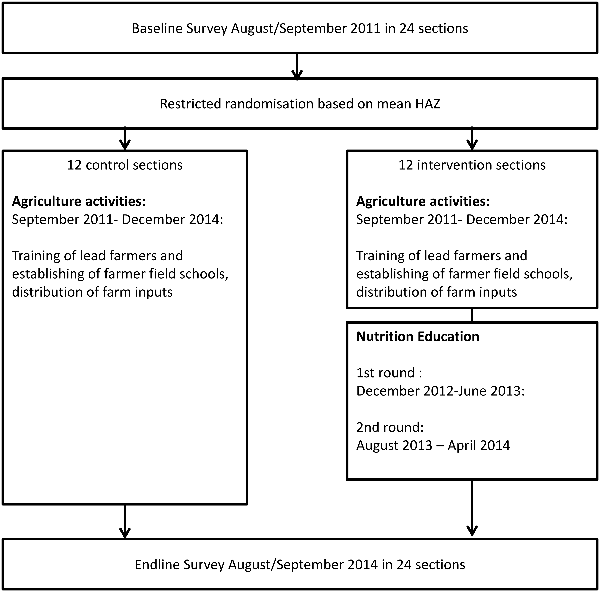
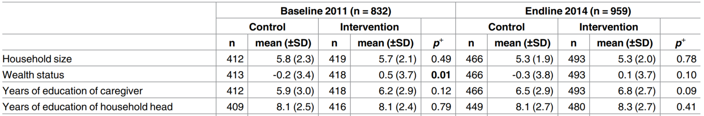
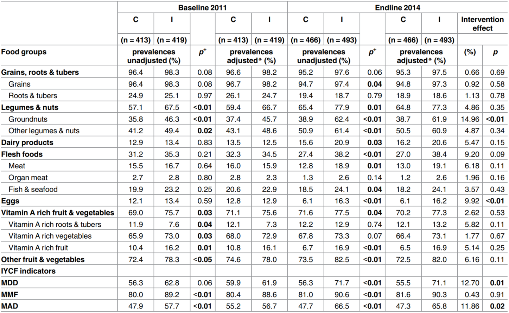
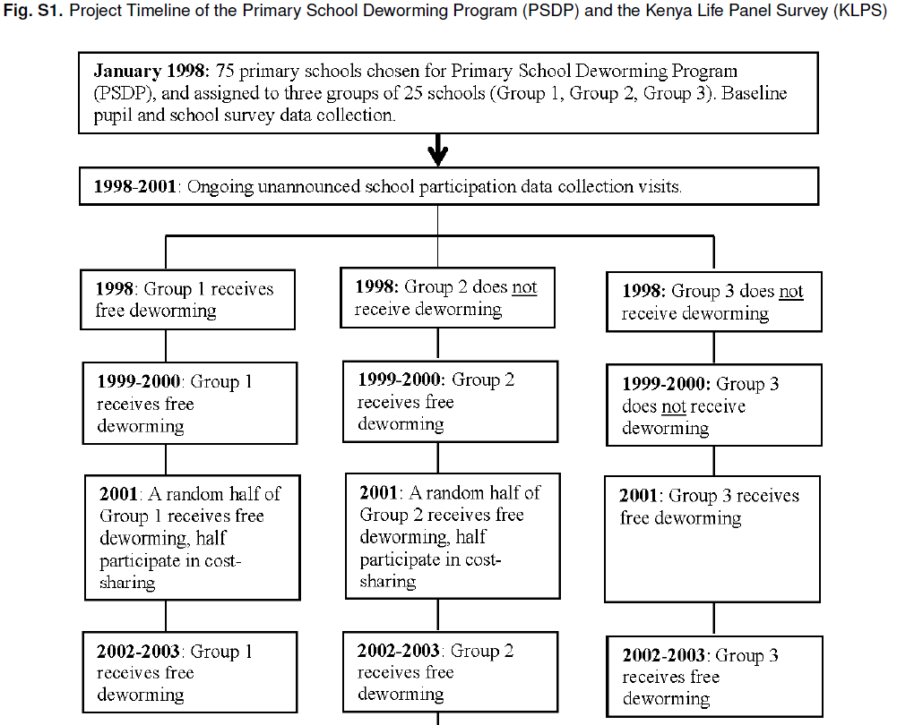
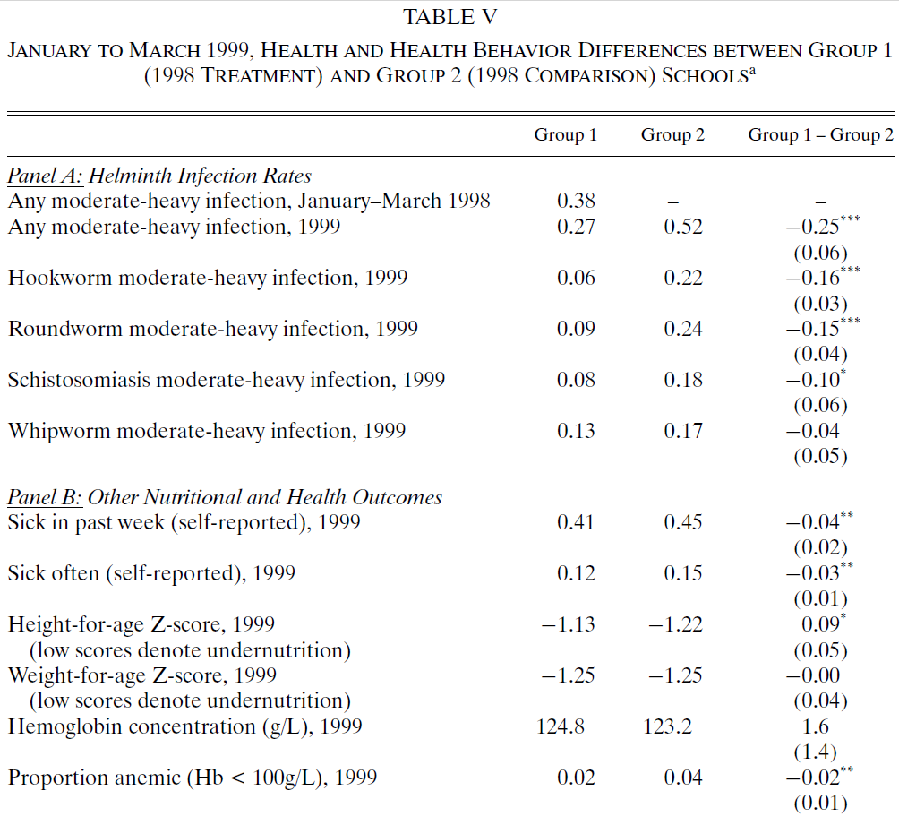
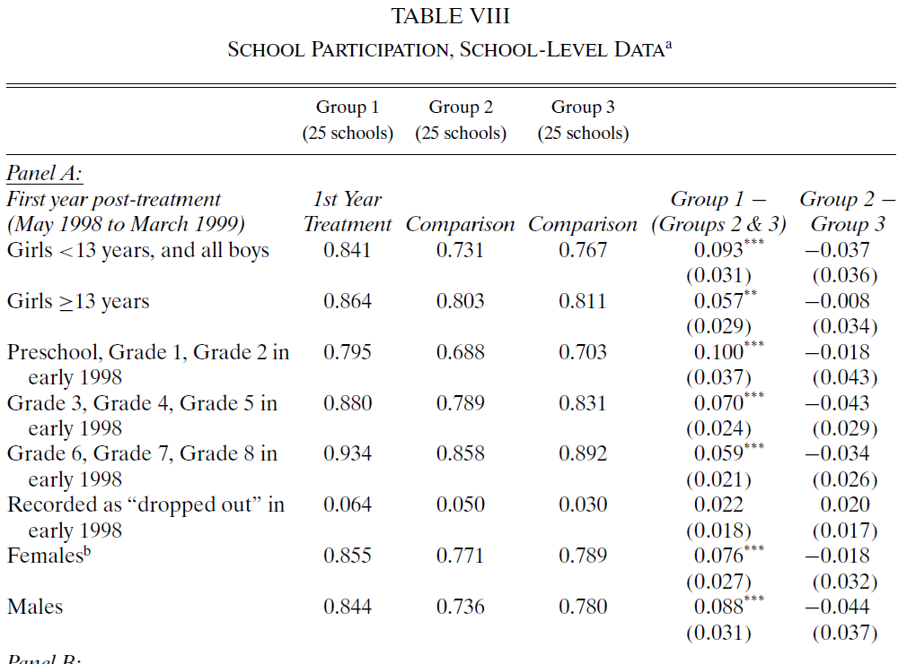
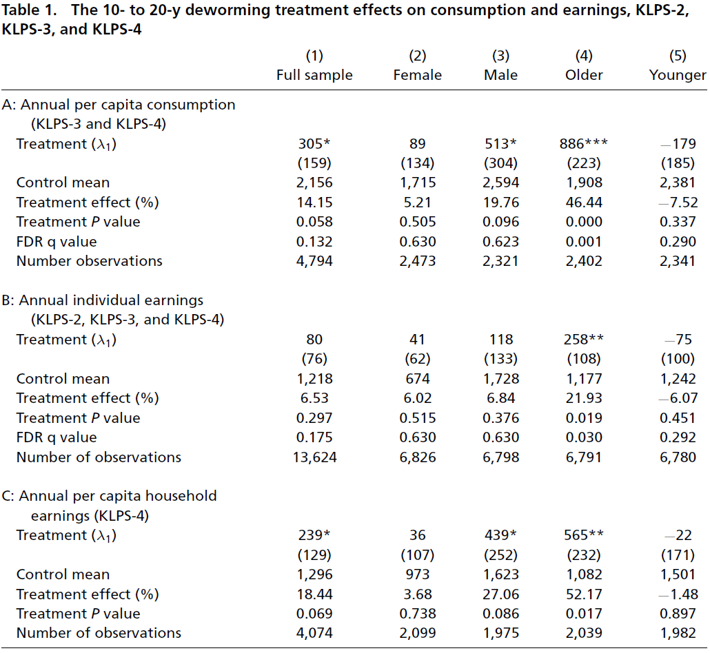
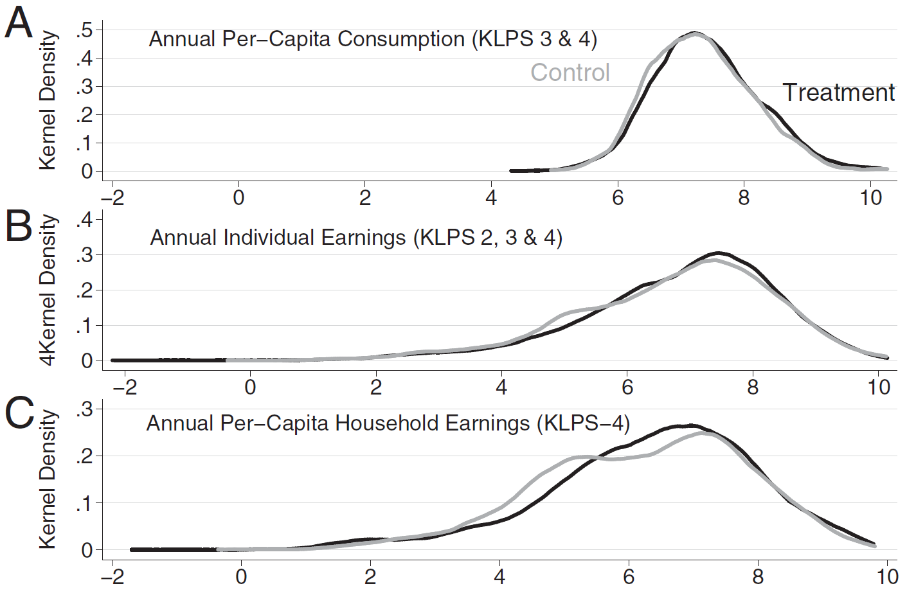
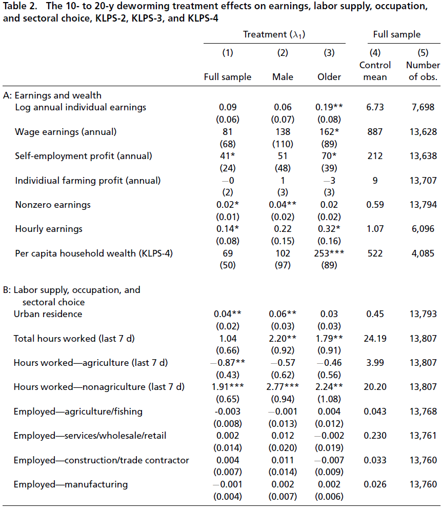
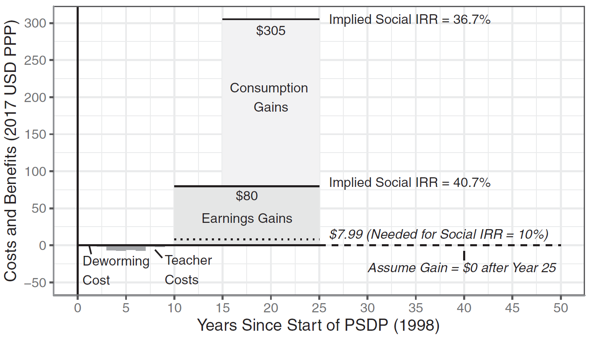

Week 04. Cause and Effect in the RCT. Hypothesis testing. T-tests. Exmples. Central Limit Theorem.
Part 1: Statistics and Econometrics. MK68-2024/25
Justus Liebig University Giessen
Institute of Agricultural Policy and Market Research
Hypothesis testing
A statistical hypothesis test is a method of statistical inference used to decide whether the data at hand sufficiently supports a particular hypothesis.
Hypothesis testing allows us to make probabilistic statements about population parameters.
- Read more in Appendix C-6 in (Wooldridge 2020).
Source: the wiki
Hypothesis testing
What?
- Hypothesis Test: A statistical test of the null hypothesis against an alternative hypothesis (Wooldridge 2020).
Why?
- We never know the true parameters of the population.
- We must infer about the population from samples.
- HT establishes certainty behind our inference (probability or an error).
How?
- Following Neyman-Pearson’s (Neyman and Pearson 1933) approach to hypothesis testing.
Neyman-Pearson’s approach
Assumes that an infinite number of repeated samples can be drawn from the same population.
Aims to minimize the risk of making false conclusions about the relationship.
Controls the probability of error when stating, “we reject the null hypothesis.”
Hypothesis Testing: Steps
\(H_0\): Null/Zero Hypothesis;
- \(H_0 : \mu = 0\)
\(H_1\): Alternative Hypothesis;
- \(H_1 : \mu \ne 0\)
Estimate parameters:
- \(\hat \mu = \widehat{\text{mean}}\) , and
- \(s = \widehat{\text{SD}}\)
Compute the test statistics;
- usually \(t\) statistics
Conclude:
to reject \(H_0 = \text{accept}\, H_1\), or
fail to reject \(H_0 = \text{accept}\, H_0\)
Calculate probabilities of making an error.
- probability value (aka “p-value”)
Hypothesis Testing may result in two errors
Type I error
false positive
probability value: “p-value”
Type II error
- false negative
The error of rejecting \(H_0\), when \(H_0\) is the TRUE hypothesis
The error of accepting \(H_0\), when \(H_0\) is the FALSE hypothesis
NEVER KNOWN to the researchers!
p-value probability value
Neyman-Pearson’s approach to HT suggests:
reject \(H_0\), when
p-value (probability of the Type I error)
is below the level of significance \(\alpha\).
That means:
- when we reject \(H_0\), the probability that we’ve made a mistake is below \(\alpha\)
Thus, we reject \(H_0\) only and only if \(\text{p-value} < \alpha\).
\(\alpha\) is the level of significance
Maximum probability of a Type I error in hypothesis testing.
In social sciences, the level of significance
should not be higher than 5% (\(\alpha = 0.05\)).
\(\alpha = 0.01\), \(\alpha = 0.001\) are allowed.
HT Examples
Example (1): Stunting and education
Can educating and training parents about nutrition reduce stunting in children?
Our data measures the change in stunting levels before and after training for 500 individuals.
Formulate the hypotheses: \(H_0\) and \(H_1\).
Provide examples of Type I and Type II errors in the context of your hypothesis.
Hypotheses examples
Null hypothesis:
- \(H_0:{\Delta}_{\text{stunting}} = 0\)
Alternative hypothesis:
- \(H_1:{\Delta}_{\text{stunting}} \ne 0\)
- \(H_1:{\Delta}_{\text{stunting}} > 0\)
- \(H_1:{\Delta}_{\text{stunting}} < 0\)
Errors examples
Type I error:
1/4 We conclude to reject \(H_0\): \({\Delta}_{\text{stunting}}\ne 0\),
2/4 But this conclusion is driven by a random variation in the sample.
3/4 In the population, training had nothing to do with stunting.
4/4 Repeated sampling will probably fail to show a difference.
Type II error:
1/3 We conclude to accept \(H_0\): stunting rate did not change after training.
2/3 In fact, the Training helped, but…
3/3 other factors let to the food shortage in the survey year.
Example (2)
Question: What % of ravens are White?
Hypothesis:
- \(H_0:\) White ravens make up 0% of the population
- \(H_1:\) Share of white raven is not zero (> 0%)
Data:
- we went to a park;
- we saw 100 ravens (or crows);
- no white ravens!
Results: the share of white ravens is 0!
Conclusion: fail to reject \(H_0\) (Accept \(H_0\) )
Example (2): Raven color
Conclusion: Accept \(H_0\) (there are no white ravens)
Did we make any errors? If yes, which one?
- We’ve made the type II error: false negative.
Because:
- We do not know if \(H_0\) is a true hypothesis.
- We did not use theory (did not study ornithology).
- The theory has to justify our choice of the \(H_0\).
Homework on hypothesis testing
Be prepared to answer the following questions in response to a hypothetical research question prompt during an exam.
What is the outcome variable and what is the treatment? Describe how you would measure those.
Define the factual and counterfactual outcomes.
Formulate \(H_0\) and \(H_1\).
What plausible causal channel(s) runs directly from the treatment to the outcome?
Discuss Type I and Type II errors in the context of your hypothesis.
Provide examples of factors that could lead to these errors.
Propose an RCT experiment that could help answer these questions.
Explain what makes an RCT a good/bad solution to the research question.
Research questions:
How does students’ performance in a class vary across different years of enrollment?
Are yields higher on farms that use precision agriculture?
How effective are cash disbursements in alleviating poverty?
What is the poverty-reducing effect of schooling?
Many firms, particularly in southern European countries, are small, and owned and run by families. Are family owned firms growing more slowly than firms with a dispersed ownership?
What is the effect of studying economics rather than sociology on the salaries of university graduates?
What is the effect of mortgage interest rates on the number of new housing starts?
Examples of Hypothesis Testing
The paper (Kuchenbecker et al. 2017) aimed to assess the potential of community-based nutrition education to improve height-for-age z-scores in children aged 6 to 23 months.
The authors conducted a randomized controlled trial (RCT) in Malawi over 5 years.
Data were collected for both the control and treatment groups at baseline and at the end line.
Kuchenbecker, Judith, … and Irmgard Jordan. 2017. “Nutrition Education Improves Dietary Diversity of Children 6-23 Months at Community-Level: Results from a Cluster Randomized Controlled Trial in Malawi.” Edited by Jacobus P. van Wouwe. PLOS ONE 12 (4): e0175216. https://doi.org/10.1371/journal.pone.0175216
Kuchenbecker et al. (2017): Research design

Kuchenbecker et al. (2017)
If the paper finds a difference in nutrition statuses between the control and treatment groups, does it mean that education has a causal effect on nutrition?
Yes! But…
Only if the treatment and control groups are similar on average in (all) other factors.
Such factors include income, education, household characteristics, skills, agricultural abilities, and so on…
Checks and balances
To identify that factors (age, education, …) are NOT DIFFERENT between two groups, we need to:
Perform statistical hypothesis testing.
Formulate the hypotheses:
- \(H_0\): Factor A in the treatment group is equal to that in the control group.
- \(H_1\): Factor A in the treatment group is NOT equal to that in the control group.
Conclude:
- We fail to reject \(H_0\).
- This means there is no difference between the control and treatment groups.
Checks and balances: the table
This table is essential for evaluating whether the treatment and control groups of the RCT are similar on average.
The table usually shows:
The estimated mean and standard deviation (SD) in the control and treatment groups.
The statistical test for the difference in means.
The probability value of the Type I error (p-value).
Kuchenbecker et al. (2017): Checks and balances tables 2-3

Formulate H0 and H1 about each variable in the table.
Perform statistical HT about the mean difference between treatment and control groups..
Conclude if each variable is the same (is different) between the treatment and control groups.
Balance of the HH size
H0: Average household size is equal between Control and treatment;
- \(H_0: \text{HH Size}_{\text{Control}} = \text{HH Size}_{\text{Treatment}}\)
H0: Average HH size is unequal
- \(H_1: \text{HH Size}_{\text{Control}} \ne \text{HH Size}_{\text{Treatment}}\)
Probability of the type I error: 0.49 (p-value)
Fail to reject \(H_0\). Because:
The difference between C and I is insignificant at the 5% level of significance.
Remember
The checks and balances table must indicate that treatment and control groups are similar (=) on average.
What if the treatment and control groups are not similar on average?
Our outcome variable may also not be similar.
However, this difference may be caused by factors other than the treatment.
The true effect of the treatment could still be zero!
How to identify if the intervention helped?
Because Kuchenbecker et al. (2017) is an RCT, we can:
Compare means of the outcome variable between two groups, by
Performing a statistical hypothesis testing (same as in checks and balances),
But now we want to reject (find a difference) the \(H_0\) at the significance level \(\alpha\)
Kuchenbecker et al. (2017) table 4: Intervention outcomes

Watch now:
How to Read Economics Research Papers: Randomized Controlled Trials (RCTs)
See (Carter et al. 2017) that underpins the video.
At home:
Practice:
Effects of a de-worming pill
In 1998 an NGO initiated
the Primary School Deworming Project [PSDP]
in Busia District (Busia County), western Kenya that is fairly representative of rural Kenya
in 75 randomly selected schools (32,000 pupils) with a helminths prevalence rate over 90%!
PSDP implementation timeline
Source: (Hamory et al. 2021), supplementary materials.

Checks and balances between groups
Source: (Miguel and Kremer 2004) table 1.
See the full table and interpret it.
Is there any difference between treatment and control groups?

Immediate effect on health
Source: (Miguel and Kremer 2004) Table 5.
Check the full table and interpret it.
What effects were and were not caused by deworming treatment?

Immediate effect on school participation
Source: (Miguel and Kremer 2004) Table 8.
- Check the full table and interpret it.

Long-term economic effects (1)
Source: (Hamory et al. 2021) Table 1.
- Check the full table and interpret it.

Long-term economic effects (2)
Source: (Hamory et al. 2021) Figure 1.
- the x-axis represents the log of annual earnings per capita.

Long-term economic effects (3)
Source: (Hamory et al. 2021) Table 2.

Costs and benefits of deworming
Source: (Hamory et al. 2021) Figure 2

References
t-test with the Conditional Cash Transfers (CCTs)
Let us consider an example of CONDITIONAL CASH TRANSFERS’ causal effect on children school enrollment.
See: CH 5. The Impact of CCT Programs on the Accumulation of Human Capital from (Fiszbein et al. 2009).
Conditional Cash Transfers (CCTs)
CCTs are programs that transfer cash on the condition of making pre-specified investments in human capital and children. (Fiszbein et al. 2009, fig. 1)


Cause and Effect
1. Cause / Treatment:
- CCTs (monetary incentive) + Pre-specified conditions
2.a Outcome / Factual
- School enrollment
- in treatment;
2.b Counterfactual
- School enrollment
- in control;
3. ATE: \(\text{Effect} = \text{Factual} - \text{Counterfactual}\)
- \(\text{Average Treatment Effect} = \text{Enrollment Rate Difference}\)
What makes “Difference in Enrollment Rate” a causal effect?
What statistical concepts ensure that the difference in school enrollment between the treatment and control is caused by the treatment?
Research Designed with the RCT:
- Randomization between the Control and Treatment group;
the Law of Large Numbers (LLN):
- Both random groups are equal on average;
The RCT + LLN = Ceteris Paribus;
- All other things are equal between the Control and Treatment groups;
Good controls in the RCT
The control group is a perfect counterfactual when three conditions are met:
has the same characteristics, on average, as the treatment group;
remains unaffected by the treatment; and
reacts to the treatment in the same way as the treatment group;
When these three conditions are met, the treatment causes the effect ceteris paribus (Gertler et al. 2016).
How to check that ceteris paribus is ensured?
What statistical tools are used to check that control and treatment groups are the same on average?
Checks and balance tables
performs a mean-difference test between treatment and control for
variables that are (should be) independent of treatment
No significant differences (failing to reject \(H_0\)) suggest that the two groups are the same on average
Any significant differences (rejecting \(H_0\) at the \(\alpha\) level of significance) imply that the two groups are not random.
Ceteris Paribus
Other things are equal! The “other things” are:
measurable features (age, height, costs, …);
measurable but absent from our data;
nonmeasurable factors (ability, effort, connections, …)
Checks and balances table
Source: (Miguel and Kremer 2004) table 1.
Variable-specific means are not the same across groups.
- How to conclude about any difference?
Note: *** indicates p-value < 0.01, ** p-value < 0.05, and * p-value < 0.1.
Hypothesis testing
Formulate \(H_0\) and \(H_1\).
\(H_0: \text{diff} = 0\)
\(H_1: \text{diff} \ne 0\)
Use a statistical test, called t-test
- to conclude weather to reject \(H_0\) or fail to reject \(H_0\).
t-tests (1)
Is a statistical test use to conclude about the population based on a sample.
One sample t-test: Compares a population parameter \(\mu\) to an arbitrary number?
Two sample t-test: Compares difference between two parameters \(\mu_1\) and \(\mu_2\) in the population?
Its purpose is to infer:
whether or not the population parameter \(\mu\) (mean, or else)
is different from an arbitrary number (usually zero: \(\mu_{0} = 0\))
based on our sample estimates of
- the parameter (\(\widehat{\text{mean}}\)), its variance (\(s\)), and the sample size \(n\).
t-tests (2) Alhorithm 1/2
Step 1: Formulate our Hypotheses
\(H_0: \mu = 0\)
\(H_1: \mu \ne 0\)
Step 2: Compute out Statistics based on the sample
Estimated parameter: \(\widehat{\mu}\)
Standard Deviation: \(s\)
Zero hypothesis value: \(\mu_0 = 0\)
Significance level: \(\alpha = 0.05\)
Number of observations: \(n\)
t-tests (3) Alhorithm 2/2
Step 3: Compute t-statistics (and a p-value using the PC)
\[ t = \frac{\hat\mu - \mu_0}{\text{se}} = \frac{\sqrt{n} ( \hat\mu - \mu_0)}{s}\,, \]
where \(se = s / \sqrt{n}\) is the standard error of the estimate;
Step 4: Conclude
Reject \(H_0\) if:
\(|t| > 2\) the “rule of thumb”
- The same applies if we say that the estimate is two times larger than the mean.
\(\text{p-value} < \alpha\) (probability of type I error < level of significance
Fail to reject \(H_0\)
Checks and balances: conclusions
Are the treatment and control groups on average similar?
Table source: (Miguel and Kremer 2004).
Note: *** indicates p-value < 0.01, ** p-value < 0.05, and * p-value < 0.1.
If yes: A mean comparison of the outcome variables reveals the causal effect
If no: We need to use other methods to measure the effect, such as regression.
t-tests (3.1) example
Do the CCTs improve children school enrollment? (Fiszbein et al. 2009)
The effect: \(\widehat{\text{Enrollment change}} = \widehat{\text{After the CCT}} - \widehat{\text{Before the CCT}}\)
Hypothesis:
\(H_0:\) \(\text{Enrollment change} = 0\)
\(H_1:\) \(\text{Enrollment change} > 0\)
Statistical test:
One-sided t-test
at the 5% level of significance \(\alpha = 0.05\)
Desired t-test result:
Which t-test result indicates that CCT has a positive effect on school enrollment?
\(\text{p-value}\) \(< \alpha\) or \(\text{p-value} < 0.05\)
\(|\text{t-statistics}|\) \(> c_{df, \, 0.95}\)
We need to be able to reject \(H_0\)
Source: (Fiszbein et al. 2009)
t-tests (3.2) example

The column for “impact” reports the difference and standard error (in parentheses); the unit is percentage points, except of the Jamaican PATH program.
*,**, and***indicates if the p-value is below a corresponding significance levels of 10, 5, and 1 percent.
- What is shown in the rows?
- case-specific t-test
- What are \(H_0\) and \(H_1\)?
- \(H_0: \text{diff} = 0\); \(H_1: \text{diff} \ne 0\);
- What are the conclusions for each row?
- Reject/Accept \(H_0\)
- What do “stars” imply for test-specific conclusions for each row?
t-tests (3.3) example

Interpret results of the statistical test for country A at the X (1%, 5%) level of significance.
- State Null and Alternative hypotheses.
- Conclude about the HT results.
- What parameter/statistics/number was used to make this conclusion?
For example. In (Ahmed et al. 2007) authors failed to show that CCTs improve/worsen children school enrollment in Turkey. With “H0: no improvement” versus the “H1: some improvement”, the authors failed to reject the H0 at the 5% sign. level for the populations of primary and secondary school attendees …
(For example cont.) … In absolute terms, authors show a reduction in primary school enrollment by 3% and an increase in secondary school enrollment by 5.2%. However, the probability that these changes are due to sample variation (probability of type I error / p-value) is above 5% and 10% respectively. Table source: (Fiszbein et al. 2009)
Homework: Read/do more on Hypothesis testing
OpenIntro Foundations for Inference:
Khan Academy:
Homework
Make the topic-specific homework.
Answer sample exam questions.
Readings
Chapter 1 Randomized Trials. In Mastering ’metrics : the path from cause to effect / Joshua D. Angrist and Jörn-Steffen Pischk. Princeton University Press, 2015. https://justfind.hds.hebis.de/Record/HEB35797798X
Chapter 2 Regression. In Mastering ’metrics : the path from cause to effect / Joshua D. Angrist and Jörn-Steffen Pischk. Princeton University Press, 2015. https://justfind.hds.hebis.de/Record/HEB35797798X
Key concepts covered in the lecture
RCT:
- Causal meaning of the averages;
- Random sample variation;
- Need of the statistical hypothesis testing;
Hypothesis testing:
- Type I and Type II errors;
- Significance level;
- Null and Alternative Hypotheses;
- What is the probability value (p-value)?
- What do false-negative/false-positive mean?
Standard Errors:
- Definition and importance.
- SE of the sample estimates of mean.
- Difference from the sample variance.
References

MK-068-EN (TM) WS2024/25. (c) Eduard Bukin